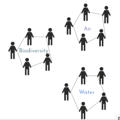
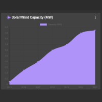

Remote Sensing

Monitoring ecosystems
Governance

On-chain Governance
Tracking

Evaluation of Community Proposals
Indigenous people make up 6% of the global population, while their traditional indigenous territories make up 80% of the planet’s biodiversity. This platform will enable Indigenous communities to monitor their ecosystems with remote sensing and immutable storage of data.
Custom Environmental Categories
Community proposals submitted to a Decentralized Autonomous Organization (DAO) will be evaluated on several categories selected by the
members.
These could include:
- Air
- Biodiversity
- Carbon
- Culture
- Food Security
- Soil
- Water
For each category, a sub-committee will evaluate proposals and maintain a category dashboard.
Ecosystem in Balance
Members can earn tokens associated with each category by performing services for the community. The tokens serve as dynamic balancing mechanism for the overall ecosystem.
On-chain Governance
Off-chain Conviction Voting Blog Post and Source Code (April 1, 2021)